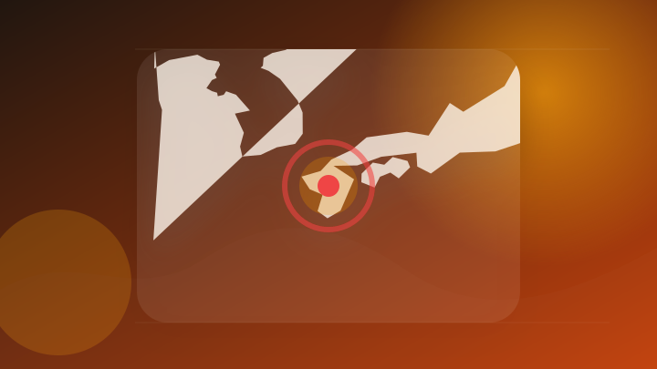
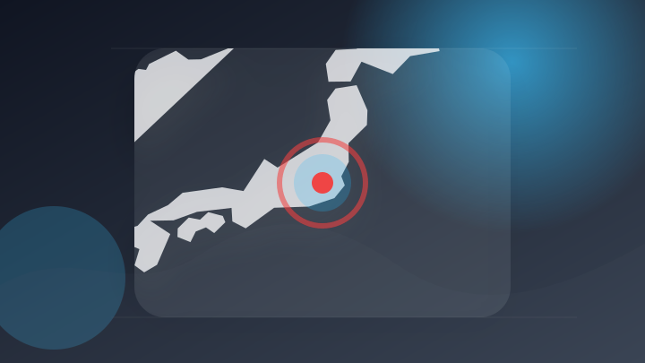
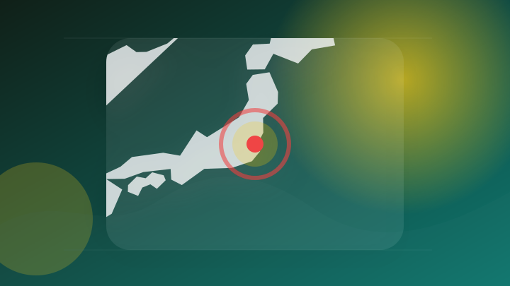
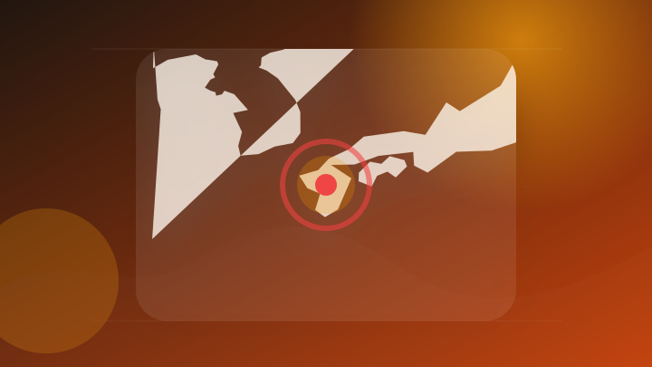
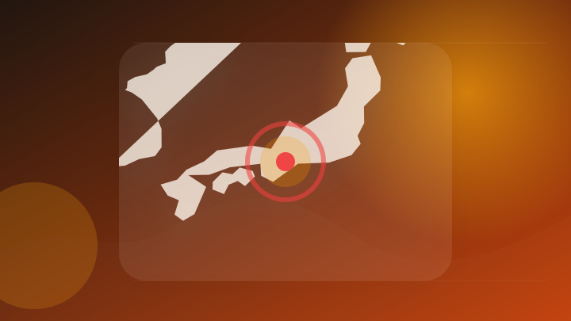
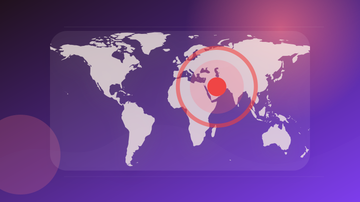

AI
6 topics

全壊の自宅前で笑顔でピース？ 被災者の偽写真が拡散、AIで加工か [熊本県] [2026年熊本地震][情報操作]
注目ポイント注目度 70点
45,000件以上のChatGPT偽装サイバー攻撃
注目ポイント注目度 67点
Anthropicのダリオ・アモデイCEOが「AIの規制」について物申す、規制が中央集権化につながるという指摘に反論
Anthropicのダリオ・アモデイCEOが「AIの規制」について物申す、規制が中央集権化につながるという指摘に反…
注目ポイント注目度 67点
ChatGPTにライターの座を奪われたと暴露した開発者と否定するCEOの対立続く運転シム『Rideshare ”スティミュレーター”』ストアページにAI生成コンテンツの開示を記載 (Game Spark)
ChatGPTにライターの座を奪われたと暴露した開発者と否定するCEOの対立続く運転シム『Rideshare ”ス…
注目ポイント独立2媒体｜注目度 66点
母と弟を殺害した10代の少年がChatGPTにアイデアを求めていたことが判明
注目ポイント注目度 61点
ChatGPT Enterpriseは若手ほど高頻度で利用、1700万件のログが示す企業AI活用の実態
注目ポイント注目度 61点
IT業界
6 topics
約9,200円の証明書で署名検証を通過、Microsoft ConfigMgrの脆弱性連鎖が判明
注目ポイント注目度 67点
Apple Watch Ultra 4とSeries 12は来月何が変わるのか？ 3年ぶりの新チップ・センサー最大2倍・セラミック復活説を整理【海外ニュース】
Apple Watch Ultra 4とSeries 12は来月何が変わるのか？ 3年ぶりの新チップ・センサー最大…
注目ポイント注目度 61点
Siri AIに最新ニュースを〜Appleが報道各社と契約交渉か - iPhone Mania
Siri AIに最新ニュースを〜Appleが報道各社と契約交渉か
注目ポイント注目度 61点
【Amazonベストセラー1位】Apple「iPad」はアプリ起動や作業もストレスなくこなせる【8月15日】
注目ポイント注目度 61点
OpenAIの幹部大量流出は、同社の1兆ドル規模のIPO目標を試すことになるかもしれない。
cryptopolit…
注目ポイント注目度 61点
トランプ政権がAppleの中国産メモリー検討を牽制 - CHOSUNBIZ
トランプ政権がAppleの中国産メモリー検討を牽制
注目ポイント注目度 61点
政治
6 topics
イエメン政府、フーシ派のミサイル攻撃により少なくとも4人の民間人が死亡と発表
注目ポイント注目度 67点
全国戦没者追悼式
注目ポイント注目度 65点
終戦の日に「高市カラー」を出した首相 1年で元に戻った追悼式辞 [高市早苗首相 自民党総裁]
注目ポイント注目度 64点
読む政治：高市首相、壁の先には靖国 自民は集団参拝で保守層つなぎ留めも
注目ポイント注目度 64点
高市首相が戦没者追悼式で戦争責任を回避する言い回し 自身の歴史観をアピールする場に
注目ポイント高市首相が戦没者追悼式で戦争責任を回避する言い回し・自身の歴史観をアピールする場に・tokyo｜注目度 64点
惨禍を繰り返さ「せ」ない 高市首相の式辞に加わった1文字への懸念 [高市早苗首相 自民党総裁]
注目ポイント注目度 64点
社会
6 topics
岐阜 長良川で水難事故相次ぐ 23歳の男性 計2人が溺れて死亡
注目ポイント注目度 70点
靖国神社近くで警察官に体当たり、けがさせた疑い 右翼活動家を逮捕 [東京都]
注目ポイント注目度 70点
女子中学生を自宅に連れ込み 容疑で派遣社員逮捕 「香川に来な」SNS通じ家出提案か
注目ポイント注目度 70点
岐阜県の長良川、愛知県の矢作川で水難事故相次ぐ 2人死亡 １人行方不明（メ〜テレ（名古屋テレビ））
注目ポイント注目度 67点
【速報】車でひき殺そうとした殺人未遂などの疑いで男を逮捕 撮り鉄とのトラブル原因か【徳島】
注目ポイント注目度 67点
阿波踊り開催中の徳島市で「すり」女を逮捕【徳島】（JRT四国放送）
注目ポイント注目度 67点
事件・事故
6 topics
「缶チューハイに錠剤が…」気づいた30代元妻が110番通報 暴行疑いで40歳の男逮捕「間違いありません」警察は薬の成分などを捜査
「缶チューハイに錠剤が…」気づいた30代元妻が110番通報 暴行疑いで40歳の男逮捕「間違いありません」警察は薬の…
注目ポイント注目度 70点

軽乗用車とトラックが衝突し男子大学生死亡 いずれか車線はみ出したか 埼玉・杉戸町
注目ポイント注目度 70点

札幌・北区特殊詐欺事件 キャッシュカードをトランプカードとすりかえ…茨城県の病院職員の女を逮捕
注目ポイント注目度 67点
“撮り鉄”とトラブルか 車でひき殺そうとした疑い 男逮捕
注目ポイント注目度 67点
鑑識体験や逮捕術など業務紹介 赤磐署がオープンポリス
注目ポイント注目度 67点
融資求める男性から94万円詐取 容疑の男逮捕 三重県警津署
注目ポイント注目度 67点
災害
6 topics
【ダブル台風のたまご】新たな「熱帯低気圧」が“2個”発生...日本への影響は、今後の進路・台風情報に注意...8月26日までの雨・風シミュレーションで確認【気象庁15日天気図】 | 岡山・香川のニュース | 天気 | RSK山陽放送 (1ページ)
【ダブル台風のたまご】新たな「熱帯低気圧」が“2個”発生...日本への影響は、今後の進路・台風情報に注意...8月…
注目ポイント独立2媒体｜注目度 95点
Ｍ７．７の地震、４７人死亡 １．６メートルの津波観測―インドネシア
注目ポイント注目度 70点
佐倉市の豪雨被害 熊谷知事が視察「激甚災害」指定を要望へ 市内では100棟以上浸水
注目ポイント注目度 70点

熊本地震の住宅被害３万８９４棟、なお３２０５人が避難…２万６４５０戸で断水続く
注目ポイント注目度 70点

ダブル台風 東海地方にあす27日接近か 台風8号の後を追うように7号が… 台風接近前から大雨のところも 愛知･名古屋･岐阜･三重の天気予報【台風情報】
ダブル台風 東海地方にあす27日接近か 台風8号の後を追うように7号が… 台風接近前から大雨のところも 愛知･名古…
注目ポイント注目度 70点
大阪府で最大震度1の地震 大阪府・熊取町
注目ポイント注目度 70点
経済
4 topics

ベッセント米財務長官、対イラン新制裁を近く発表…「経済的孤立」に追い込むと強調
注目ポイント注目度 70点
日銀の利上げを後押しする2つの経済指標｜池田伸太郎
日銀の利上げを後押しする2つの経済指標
注目ポイント注目度 67点
40.56米ドル――これが、今回の決算を受けてアナリストたちがWhiteFiber, Inc.（NASDAQ:WYFI）の企業価値として見積もっている金額だ
40.56米ドル――これが、今回の決算を受けてアナリストたちがWhiteFiber, Inc.（NASDAQ:WY…
注目ポイント注目度 61点
凌巨の取締役会が残り1人に 第2四半期決算が未提出で取引停止の恐れ 4万人の株主に影響
注目ポイント注目度 61点